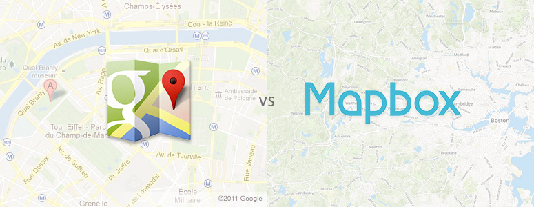

Google Maps API vs Mapbox + OSM
Google Maps
Pro's
- Google Maps is the winner for 99% of use cases
- 2500 map views for free, charged $0.50 USD per 1,000 additional requests up to 100,000 requests per API per day
- Accuracy— Google has access to huge data streams that no ordinary company can afford to access. E.G. ETA is a function of numerous variables like terrain information, average speed data, real time traffic data, weather etc.
- Associated Services; Google Maps API is keyed into services such as Places, Business, Streetview, Satellite Imagery, Autocomplete, Google Earth etc.
- Good Documentation
- Large Selection of Examples
- Easily Configurable
- Address Input through API
Con's
- Not very flexible with integrating external API’s ( D3.js or Angular, though it can be done, is a pain )
- The value of proprietary map data is approaching zero
Nokia for example bought HERE for $8 Billion, recently sold for $3 Billion, i.e. open-source map data is winning against proprietary data, giving the upper hand
to open-source now & in the future.
This calls into question their current pricing structure, along with how they proceed, as the true value of map data continues to fall.
Mapbox
Pro's
- Built using OSM
( hallmark is customization & malleability, maintained by ~2mil members )
- API is Developers Choice
- Tech Support
- Easy-To-Use GUI ( Map Studio ) for making Custom Maps / Vectors / Data Visualizations / Injecting Custom SVG’s & Data into existing map styles
- Uses WebGL tech, making the animations / loading very smooth
- Visually stands-out and very appealing
Con's
- Will need very specialized design and data goals & needs to justify omitting Google Maps as a solution over Mapbox
- Documentation is either exactly right or out of date; depends on which library you use. Mapbox GL has an extensive examples library with code and previews, bringing dev overhead down, but other services ( like the studio ) has limited documentation
- Can be difficult to discern what needs to be configured in code and what needs to be done in the Map Stuio
- Though OSM is a hallmark of Mapbox as a service, tensions may lead to a fractured relationship; future unclear. Read this excellent City Lab article for more details.
Arguably Good or Bad
- 50,000 views/month for $50 w/ 3 custom styles
- Direct and arguably sole competitor of Google Maps due to it's configurable nature